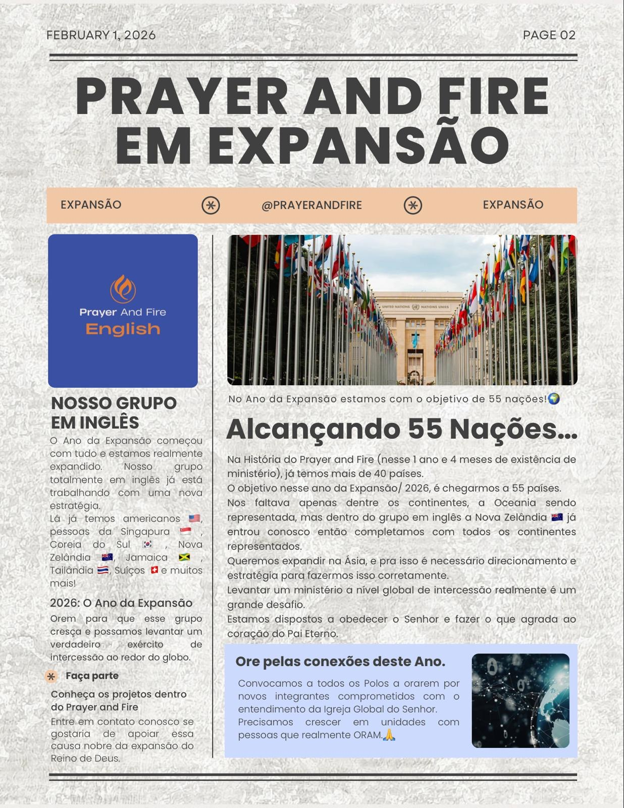
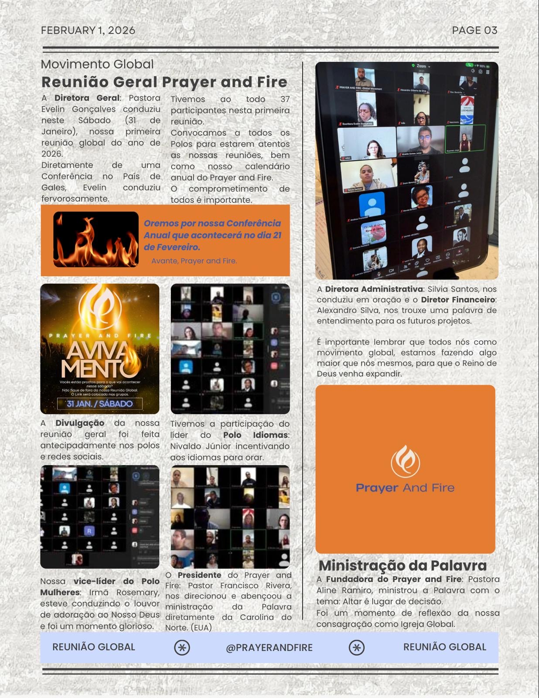

Africa Food Outreach
Supporting children and families through community meals and care.
Prayer & Fire is a global movement of prayer, discipleship, and faith-centered resources serving believers across nations and languages.
Prayer & Fire is serving communities through prayer, discipleship, education, food programs, and humanitarian support across Africa, Asia, Europe, and North America.
Supporting children and families through community meals and care.

Helping children learn through classes, school support, and community education.

Serving vulnerable families through practical help and local ministry partnerships.

Practical compassion expressed through food assistance and local outreach.

Encouraging children through learning, mentorship, and community development.

Prayer networks, territorial groups, and ministry connections across nations.
Community outreach, leadership development, and prayer networks.
Education, food programs, family care, and discipleship.
Prayer partnerships and ministry collaboration.
Prayer movement, resources, and global mission support.
A visual record of global meetings, expansion, prayer connections, and ministry communication.


To strengthen believers through prayer, intercession, biblical encouragement, discipleship, and global faith-centered resources.
Prayer & Fire was founded on September 13, 2024 — a word directed by the Lord to raise a global movement of prayer and faith.
A global Christian movement focused on prayer, spiritual growth, discipleship, and resources that strengthen believers worldwide.

Founder of Prayer & Fire, serving the global vision of prayer, discipleship, and revival.

President of Prayer & Fire, serving the movement through leadership, prayer, and global mission.
Prayer & Fire leadership is committed to serving the global body of Christ through prayer and faith.
Prayer & Fire continues connecting believers, leaders, and churches through global meetings, prayer networks, and ministry communication.
Official Prayer & Fire resources, books, apparel, and products.
Browse available Prayer & Fire books and open them securely on Amazon.
Browse the available titles. Tap to open on Amazon.
Loading books...
Follow Prayer & Fire on our official platforms.
Your generosity helps support prayer initiatives, global outreach, faith resources, and the Prayer & Fire mission.
Update your payment method or cancel monthly support through the secure Stripe portal.
You can cancel anytime.
Use our official email for ministry communication, partnership questions, and support.